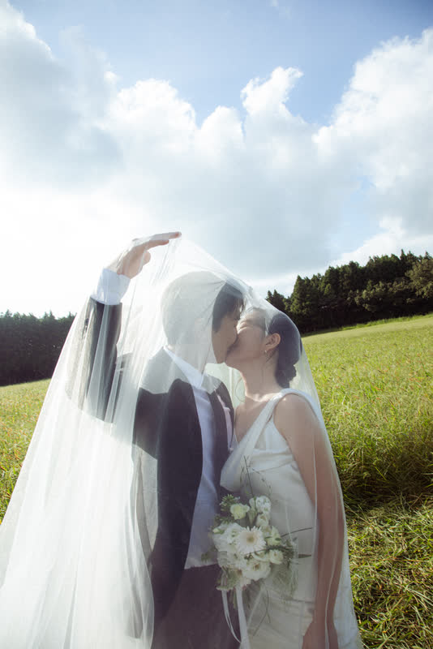

<meta charset="utf-8">
<meta name="viewport" content="width=device-width, initial-scale=1, viewport-fit=cover">
<title>진용·하림 사진</title>
<meta name="claude:viewport-fit-sides" content="cover">
<link rel="preconnect" href="https://fonts.googleapis.com">
<link rel="preconnect" href="https://fonts.gstatic.com" crossorigin>
<link href="https://fonts.googleapis.com/css2?family=Archivo:wght@500&family=Noto+Sans+KR:wght@400;500&display=swap" rel="stylesheet">
<link rel="stylesheet" href="SectionKit.css">
<style>
  /* Photos: a scrapbook page (the user's reference): photos of clearly different sizes scattered unevenly on
     the paper, one big landscape hero in the middle, smaller ones staggered left and right above and below it,
     all kept inside the screen so every crayon frame shows whole. Each photo is outlined by a hand-drawn crayon rectangle (the cover's greenhouse frame color, two loose passes),
     no shadow, no rotation. Photos only: no words.

     Every place is in cqw (1% of the section's width), so the page scales as one piece from 375px to 440px.
     Each photo carries its slot inline: --x / --y (top-left corner), --w (width) and --r (aspect ratio). */
  .photos--scrap {
    box-sizing: border-box;
    max-width: 440px;
    margin: 0 auto;
    padding: 24px 0 56px;
    overflow: hidden;
    overflow: clip;
    container-type: inline-size;
  }

  .scrap__page {
    position: relative;
    width: 100%;
    height: calc(min(100vw, 440px) * 4.56);
    height: 456cqw;
  }

  .scrap__photo {
    appearance: none;
    -webkit-appearance: none;
    position: absolute;
    left: calc(var(--x) * 1cqw);
    top: calc(var(--y) * 1cqw);
    display: block;
    box-sizing: border-box;
    width: calc(var(--w) * 1cqw);
    aspect-ratio: var(--r);
    margin: 0;
    padding: 0;
    border: 0;
    border-radius: 0;
    background: #d9d6cf;
    cursor: zoom-in;
    -webkit-tap-highlight-color: transparent;
  }

  /* Crayon frame: a wobbly rectangle drawn over the photo's edge, stretched to the photo (non-scaling stroke).
     Four drawings cycle so no two neighbours look stamped. Colors are literal: url() cannot read custom properties
     (#7f8b8a is the cover's FRAME_COLOR). */
  .scrap__page {
  --scrap-frame-1: url("data:image/svg+xml,%3Csvg xmlns='http://www.w3.org/2000/svg' viewBox='0 0 100 100' preserveAspectRatio='none'%3E%3Cpath d='M1.7 1.7C33.7 2.5 65.4 1.2 100.2 1.9M97.7 0.2C98.5 33.7 97.3 65.4 98.1 99.4M98.1 98.1C66.3 98.5 34.6 98 0.4 98.1M1.7 98.5C2.6 66.3 2.3 34.6 1.7 1' fill='none' stroke='%237f8b8a' stroke-width='2.6' stroke-linecap='round' vector-effect='non-scaling-stroke'/%3E%3Cpath d='M2.3 2C34.2 3.1 65.6 2.2 98.7 2.7M98.4 1.6C97.3 34.2 97.2 65.6 97.9 99.1M98.3 97.6C66.1 97.6 34.5 98.3 0.2 98.1M2.5 98.6C3 66.2 3.2 34.8 2.9 1.7' fill='none' stroke='%237f8b8a' stroke-width='1.2' stroke-linecap='round' opacity='.5' vector-effect='non-scaling-stroke'/%3E%3C/svg%3E");
  --scrap-frame-2: url("data:image/svg+xml,%3Csvg xmlns='http://www.w3.org/2000/svg' viewBox='0 0 100 100' preserveAspectRatio='none'%3E%3Cpath d='M1.5 2.2C33.7 1.5 65.4 1.9 100.4 1.7M98.4 1C98.9 33.7 98.2 65.4 98.5 99.5M98.8 97.4C66.3 97.7 34.6 97.7 1.3 97.9M2.5 99.1C2.8 66.3 1.4 34.6 1.6 0.2' fill='none' stroke='%237f8b8a' stroke-width='2.6' stroke-linecap='round' vector-effect='non-scaling-stroke'/%3E%3Cpath d='M1.8 2.4C34.2 2.6 65.6 3.2 99.6 2.9M98.5 2.6C97 34.2 97.5 65.6 97.4 99.1M97.9 98.5C66 97.9 34.5 97.1 1.5 97.9M2 98.7C3.2 66.2 3.1 34.8 2.8 0.6' fill='none' stroke='%237f8b8a' stroke-width='1.2' stroke-linecap='round' opacity='.5' vector-effect='non-scaling-stroke'/%3E%3C/svg%3E");
  --scrap-frame-3: url("data:image/svg+xml,%3Csvg xmlns='http://www.w3.org/2000/svg' viewBox='0 0 100 100' preserveAspectRatio='none'%3E%3Cpath d='M-0.1 1.6C33.7 2.3 65.4 2.9 98.5 1.4M97.8 1.5C97.4 33.7 97.5 65.4 98.3 99.2M100 98.1C66.3 98.3 34.6 97.2 0.5 98.5M2.4 99.4C1.1 66.3 1.4 34.6 2 0.7' fill='none' stroke='%237f8b8a' stroke-width='2.6' stroke-linecap='round' vector-effect='non-scaling-stroke'/%3E%3Cpath d='M2.4 2C34.2 2.5 65.6 2.2 99.8 2.8M97.8 1.3C98.3 34.2 97.3 65.6 97.2 99.1M98 97.6C66 97 34.5 97.3 0.1 97.8M2 98.8C1.6 66.2 3.3 34.8 2.9 0.7' fill='none' stroke='%237f8b8a' stroke-width='1.2' stroke-linecap='round' opacity='.5' vector-effect='non-scaling-stroke'/%3E%3C/svg%3E");
  --scrap-frame-4: url("data:image/svg+xml,%3Csvg xmlns='http://www.w3.org/2000/svg' viewBox='0 0 100 100' preserveAspectRatio='none'%3E%3Cpath d='M-0.1 2.6C33.7 1.7 65.4 1.5 98.8 1.5M97.9 -0.1C97.6 33.7 97.3 65.4 97.8 99.1M98.7 97.9C66.3 97.9 34.6 97.8 1.1 97.7M1.8 98.6C1.4 66.3 2.3 34.6 2.5 -0.4' fill='none' stroke='%237f8b8a' stroke-width='2.6' stroke-linecap='round' vector-effect='non-scaling-stroke'/%3E%3Cpath d='M2 2.1C34.2 3.3 65.6 2.3 100.4 3M98.5 1.9C97.3 34.2 97.2 65.6 97.2 99.7M98.4 97.4C66.1 98 34.5 98.3 0.6 98.1M2.1 98.6C1.4 66.2 3.1 34.8 2.4 1.8' fill='none' stroke='%237f8b8a' stroke-width='1.2' stroke-linecap='round' opacity='.5' vector-effect='non-scaling-stroke'/%3E%3C/svg%3E");
  }

  .scrap__photo::after {
    content: '';
    position: absolute;
    inset: -3px;
    background: var(--scrap-frame-1) center / 100% 100% no-repeat;
    pointer-events: none;
  }

  .scrap__photo:nth-of-type(4n + 2)::after {
    background-image: var(--scrap-frame-2);
  }

  .scrap__photo:nth-of-type(4n + 3)::after {
    background-image: var(--scrap-frame-3);
  }

  .scrap__photo:nth-of-type(4n)::after {
    background-image: var(--scrap-frame-4);
  }

  .scrap__photo img {
    display: block;
    width: 100%;
    height: 100%;
    object-fit: cover;
    object-position: var(--pos, 50% 50%);
  }

  /* Keyboard focus: a plain pencil line around the photo (no shadow). */
  .scrap__photo:focus {
    outline: none;
  }

  .scrap__photo:focus-visible {
    outline: 2px solid var(--pencil);
    outline-offset: 2px;
  }

  /* Full view: the same paper covers the screen and the one photo sits on it whole. No dark backdrop.
     Tap anywhere, press Esc or go back to put it away. */
  /* --viewer-h is the screen height: 100vh where svh is unknown, the small viewport height where it is
     (a custom property holding 100svh is never invalid at parse time, so it needs @supports, not a fallback line). */
  .scrap__viewer {
    --viewer-h: 100vh;
    position: fixed;
    inset: 0;
    z-index: 100;
    display: grid;
    place-items: center;
    overscroll-behavior: contain;
    background: var(--paper) url("textures/paper.png") 0 0 / 200px 200px repeat;
  }

  @supports (height: 100svh) {
    .scrap__viewer {
      --viewer-h: 100svh;
    }
  }

  /* The small copy shows through as the background until the original has loaded over it. */
  .scrap__viewer-image {
    display: block;
    width: min(
      calc(100vw - 2 * max(24px, env(safe-area-inset-left, 0px))),
      calc((var(--viewer-h) - 2 * max(40px, env(safe-area-inset-top, 0px))) * var(--viewer-ratio, 1)),
      760px
    );
    height: auto;
    aspect-ratio: var(--viewer-ratio, 1);
    background-size: 100% 100%;
    pointer-events: none;
  }

  .scrap__viewer-close {
    appearance: none;
    position: absolute;
    inset: 0;
    z-index: 1;
    width: 100%;
    height: 100%;
    margin: 0;
    padding: 0;
    border: 0;
    background: transparent;
    cursor: zoom-out;
    -webkit-tap-highlight-color: transparent;
    outline: none;
  }

  @media (prefers-reduced-motion: no-preference) {
    .scrap__viewer:not([hidden]) {
      animation: scrap-viewer-in 180ms ease-out;
    }

    @keyframes scrap-viewer-in {
      from {
        opacity: 0;
      }
    }
  }
</style>

<section class="photos photos--scrap" aria-label="사진">
  <div data-scrap class="scrap__page">
    <button type="button" data-photo class="scrap__photo" style="--x: 8; --y: 6; --w: 34; --r: 3 / 4"></button>
    <button type="button" data-photo class="scrap__photo" style="--x: 50; --y: 18; --w: 44; --r: 4 / 3; --pos: 45% 50%"></button>
    <button type="button" data-photo class="scrap__photo" style="--x: 3; --y: 58; --w: 38; --r: 2 / 3"></button>
    <button type="button" data-photo class="scrap__photo" style="--x: 46; --y: 62; --w: 50; --r: 3 / 2; --pos: 56% 50%"></button>
    <button type="button" data-photo class="scrap__photo" style="--x: 6; --y: 124; --w: 88; --r: 3 / 2; --pos: 48% 50%"></button>
    <button type="button" data-photo class="scrap__photo" style="--x: 10; --y: 194; --w: 30; --r: 2 / 3"></button>
    <button type="button" data-photo class="scrap__photo" style="--x: 46; --y: 198; --w: 50; --r: 4 / 3; --pos: 48% 50%"></button>
    <button type="button" data-photo class="scrap__photo" style="--x: 22; --y: 252; --w: 36; --r: 3 / 4"></button>
    <button type="button" data-photo class="scrap__photo" style="--x: 66; --y: 256; --w: 30; --r: 1 / 1; --pos: 43% 50%"></button>
    <button type="button" data-photo class="scrap__photo" style="--x: 3; --y: 312; --w: 44; --r: 3 / 4"></button>
    <button type="button" data-photo class="scrap__photo" style="--x: 52; --y: 304; --w: 42; --r: 3 / 2; --pos: 50% 50%"></button>
    <button type="button" data-photo class="scrap__photo" style="--x: 60; --y: 342; --w: 34; --r: 2 / 3"></button>
    <button type="button" data-photo class="scrap__photo" style="--x: 8; --y: 386; --w: 40; --r: 4 / 5"></button>
    <button type="button" data-photo class="scrap__photo" style="--x: 56; --y: 402; --w: 30; --r: 2 / 3"></button>
  </div>
  <div class="scrap__viewer" id="photos-viewer" role="dialog" aria-modal="true" aria-label="사진 크게 보기" aria-describedby="photos-viewer-image" hidden>
    
    <button class="scrap__viewer-close" id="photos-viewer-close" type="button" aria-label="닫기"></button>
  </div>
</section>

<script src="SectionKit.js"></script>
<script>
  (() => {
    // Full view of one photo on the paper.
    // The photos and their places are all in the markup; this only opens and closes the view.
    // Wrapped in its own scope so nothing leaks into the page's globals.
    const VIEWER_TAP_GUARD_MS = 350;
    const viewer = document.getElementById('photos-viewer');
    const viewerImage = document.getElementById('photos-viewer-image');
    const viewerClose = document.getElementById('photos-viewer-close');
    const photoButtons = [...document.querySelectorAll('[data-scrap] [data-photo]')];
    let viewerOpenedAt = 0;
    let viewerReturnFocus = null;
    // True while the open view has its own history entry, so Android's back button closes it.
    let viewerInHistory = false;

    // photos/photo-07-sm.jpg -> photos/photo-07.jpg (the 1600px original).
    const getOriginalSource = (smallSource) => {
      return smallSource.replace(/-sm\.jpg$/, '.jpg');
    };

    const handleViewerImageLoad = () => {
      viewerImage.style.backgroundImage = '';
    };

    const openViewer = (button) => {
      const thumb = button.querySelector('img');
      const width = Number(thumb.getAttribute('width'));
      const height = Number(thumb.getAttribute('height'));

      viewerOpenedAt = performance.now();
      viewerReturnFocus = button;
      viewerImage.style.setProperty('--viewer-ratio', (width / height).toFixed(4));
      viewerImage.style.backgroundImage = `url("${thumb.currentSrc || thumb.src}")`;
      viewerImage.alt = thumb.alt;
      viewerImage.setAttribute('src', getOriginalSource(thumb.getAttribute('src')));
      viewer.hidden = false;
      document.documentElement.style.overflow = 'hidden';
      viewerClose.focus({ preventScroll: true });

      try {
        window.history.pushState({ photosViewer: true }, '');
        viewerInHistory = true;
      } catch {
        viewerInHistory = false;
      }
    };

    const closeViewer = () => {
      if (viewer.hidden) {
        return;
      }

      viewer.hidden = true;
      document.documentElement.style.overflow = '';

      if (viewerReturnFocus) {
        viewerReturnFocus.focus({ preventScroll: true });
      }

      viewerReturnFocus = null;

      // Closed by tap or Esc: step back over the entry the view pushed. The popstate that follows is ignored.
      if (viewerInHistory) {
        viewerInHistory = false;
        window.history.back();
      }
    };

    const handlePhotoClick = (event) => {
      openViewer(event.currentTarget);
    };

    // The back button (or gesture) while the view is open closes the view instead of leaving the page.
    const handleViewerPopState = () => {
      if (!viewerInHistory) {
        return;
      }

      viewerInHistory = false;
      closeViewer();
    };

    const handleViewerClick = () => {
      // A held Enter repeats on the close button straight after opening; that must not close the view.
      if (performance.now() - viewerOpenedAt < VIEWER_TAP_GUARD_MS) {
        return;
      }

      closeViewer();
    };

    const handleDocumentKeyDown = (event) => {
      if (viewer.hidden) {
        return;
      }

      if (event.key === 'Escape') {
        event.preventDefault();
        closeViewer();
      }

      // The close button is the only stop inside the dialog, so Tab stays on it.
      if (event.key === 'Tab') {
        event.preventDefault();
        viewerClose.focus({ preventScroll: true });
      }
    };

    photoButtons.forEach((button) => {
      button.addEventListener('click', handlePhotoClick);
    });
    viewer.addEventListener('click', handleViewerClick);
    viewerImage.addEventListener('load', handleViewerImageLoad);
    document.addEventListener('keydown', handleDocumentKeyDown);
    window.addEventListener('popstate', handleViewerPopState);
  })();
</script>
